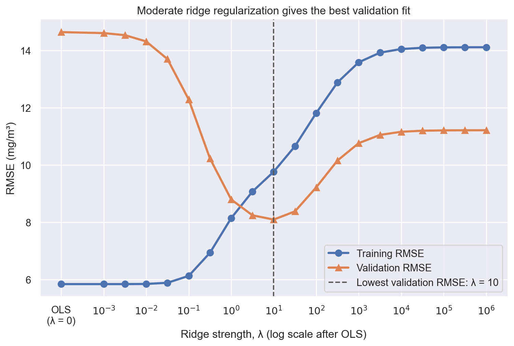

Ridge and Lasso regularization: richer models without overfitting
Adding measured operating features can give a regression model access to more useful information. It also gives the model more ways to fit details (i.e., noise) that may not repeat in future operation, leading to overfitting. In this notebook, we predict nitrogen-oxides concentration (NOX) from a fixed set of gas-turbine measurements and use ridge and Lasso regularization to control that tradeoff.
The question is: can we keep a richer set of plausible features while limiting overfitting?
1. A limited calibration campaign
As such, in the dataset, each row is one gas-turbine operating observation. We use nine measured operating quantities as features: ambient conditions (AT, AP, AH), pressure and temperature measurements (AFDP, GTEP, TIT, TAT, CDP), and energy yield (TEY). The response is measured NOX concentration.
To make the problem concrete, we sample 75 real operating observations. We fit models on 65% of them and reserve the other 35% as a validation set.
We will use this validation set to choose regularization strengths. That makes it a validation set, not an untouched final test set.
from pathlib import Pathfrom urllib.request import urlretrieveimport matplotlib.pyplot as pltimport numpy as npimport pandas as pdimport seaborn as snsfrom sklearn.linear_model import Lasso, LinearRegression, Ridgefrom sklearn.metrics import mean_squared_errorfrom sklearn.model_selection import train_test_splitfrom sklearn.pipeline import Pipeline, make_pipelinefrom sklearn.preprocessing import StandardScalersns.set_theme(context="notebook", palette="deep")deep_palette = sns.color_palette("deep")training_color, validation_color, ridge_color = ( deep_palette[0], deep_palette[1], deep_palette[2],)DATA_URL = ("https://raw.githubusercontent.com/changyaochen/MECE4520/master/""site/data/gas-turbine-course.csv")data_candidates = [ Path("../data/gas-turbine-course.csv"), Path("site/data/gas-turbine-course.csv"), Path("gas-turbine-course.csv"),]data_path =next((path for path in data_candidates if path.exists()), data_candidates[-1])# In Google Colab, download the small course dataset when it is not already present.ifnot data_path.exists(): urlretrieve(DATA_URL, data_path)FEATURES = ["AT", "AP", "AH", "AFDP", "GTEP", "TIT", "TAT", "TEY", "CDP"]TARGET ="NOX"data = pd.read_csv(data_path)calibration_data = data[FEATURES + [TARGET]].dropna().sample(n=75, random_state=48)training_data, validation_data = train_test_split( calibration_data, test_size=0.35, random_state=479,)split_summary = pd.DataFrame( {"observations": [len(training_data), len(validation_data)]}, index=["Training set", "Validation set"],)split_summary
observations
Training set
48
Validation set
27
2. Start with all measured features
Our baseline is ordinary least squares using every feature in FEATURES. Relative to the earlier AT-only regression, this is a richer candidate feature set, but it uses no engineered polynomial or interaction features.
We place StandardScaler inside every model pipeline. The scaler learns each feature’s mean and standard deviation from the training data only, then applies those values to validation observations. Standardization does not change ordinary least-squares predictions. It matters for ridge and Lasso because their penalties compare coefficient sizes across features measured in very different units.
def make_ridge_model(lambda_: float|None) -> Pipeline:"""Create a standardized ordinary least-squares or ridge-regression pipeline. Args: lambda_: Ridge penalty strength. Use ``None`` for ordinary least squares. Returns: A pipeline that standardizes features using training statistics before fitting. """ estimator = LinearRegression() if lambda_ isNoneelse Ridge(alpha=lambda_)return make_pipeline(StandardScaler(), estimator)def root_mean_squared_error(y_true: pd.Series, prediction: np.ndarray) ->float:"""Compute RMSE in the physical units of the NOX response. Args: y_true: Observed NOX concentrations. prediction: Model-predicted NOX concentrations. Returns: Root mean squared error in mg/m³. """return mean_squared_error(y_true, prediction) **0.5ols_model = make_ridge_model(lambda_=None)ols_model.fit(training_data[FEATURES], training_data[TARGET])ols_summary = pd.DataFrame( {"training RMSE (mg/m³)": [ root_mean_squared_error( training_data[TARGET], ols_model.predict(training_data[FEATURES]) ) ],"validation RMSE (mg/m³)": [ root_mean_squared_error( validation_data[TARGET], ols_model.predict(validation_data[FEATURES]) ) ], }, index=["Ordinary least squares"],)ols_summary.round(3)
training RMSE (mg/m³)
validation RMSE (mg/m³)
Ordinary least squares
5.846
14.637
3. Add a ridge penalty
For ridge regression, we minimize the usual sum of squared residuals plus a penalty on the feature coefficients:
The intercept \(\beta_0\) is not penalized. When \(\lambda=0\), the penalty disappears and we recover ordinary least squares. As \(\lambda\) grows, large feature coefficients become more expensive, so the fitted model shrinks them toward zero.
This is the same loss-plus-penalty pattern used throughout machine learning. In this notebook, we call its strength \(\lambda\); scikit-learn calls the matching Ridge argument alpha.
def fit_ridge_and_score(lambda_: float|None) ->tuple[Pipeline, dict[str, float|str]]:"""Fit one model and evaluate it on the fixed training and validation split. Args: lambda_: Ridge penalty strength, or ``None`` for ordinary least squares. Returns: The fitted pipeline and a row of training and validation metrics. """ model = make_ridge_model(lambda_) model.fit(training_data[FEATURES], training_data[TARGET]) row = {"model": "OLS"if lambda_ isNoneelsef"Ridge (λ = {lambda_:g})","lambda": 0.0if lambda_ isNoneelse lambda_,"training RMSE": root_mean_squared_error( training_data[TARGET], model.predict(training_data[FEATURES]) ),"validation RMSE": root_mean_squared_error( validation_data[TARGET], model.predict(validation_data[FEATURES]) ), }return model, rowcandidate_lambdas = np.logspace(-3, 6, 19)fitted_models: dict[str, Pipeline] = {}ols_model, ols_row = fit_ridge_and_score(lambda_=None)fitted_models[ols_row["model"]] = ols_modelrows = [ols_row]for lambda_ in candidate_lambdas: model, row = fit_ridge_and_score(float(lambda_)) fitted_models[row["model"]] = model rows.append(row)ridge_results = pd.DataFrame(rows).set_index("model")ridge_results.round(3)
lambda
training RMSE
validation RMSE
model
OLS
0.000
5.846
14.637
Ridge (λ = 0.001)
0.001
5.846
14.604
Ridge (λ = 0.00316228)
0.003
5.846
14.531
Ridge (λ = 0.01)
0.010
5.851
14.312
Ridge (λ = 0.0316228)
0.032
5.892
13.697
Ridge (λ = 0.1)
0.100
6.133
12.288
Ridge (λ = 0.316228)
0.316
6.939
10.230
Ridge (λ = 1)
1.000
8.148
8.798
Ridge (λ = 3.16228)
3.162
9.077
8.246
Ridge (λ = 10)
10.000
9.767
8.098
Ridge (λ = 31.6228)
31.623
10.657
8.384
Ridge (λ = 100)
100.000
11.814
9.221
Ridge (λ = 316.228)
316.228
12.882
10.158
Ridge (λ = 1000)
1000.000
13.584
10.764
Ridge (λ = 3162.28)
3162.278
13.921
11.051
Ridge (λ = 10000)
10000.000
14.048
11.161
Ridge (λ = 31622.8)
31622.777
14.091
11.197
Ridge (λ = 100000)
100000.000
14.105
11.209
Ridge (λ = 316228)
316227.766
14.109
11.213
Ridge (λ = 1e+06)
1000000.000
14.110
11.214
4. Select the ridge strength with validation data
The feature set is fixed. The control knob is now \(\lambda\). Small values leave the coefficients close to their ordinary least-squares values; large values shrink them strongly. We choose the value with the lowest validation RMSE, not the one with the lowest training RMSE.
The leftmost point below is ordinary least squares, shown separately as a reference. The remaining positive ridge strengths use a logarithmic scale.
positive_ridge_results = ridge_results.loc[ridge_results["lambda"] >0].copy()best_row = positive_ridge_results.loc[positive_ridge_results["validation RMSE"].idxmin()]best_ridge_lambda =float(best_row["lambda"])# Put OLS just to the left of the log-scaled ridge strengths.ridge_x = np.log10(positive_ridge_results["lambda"].to_numpy())ols_x = ridge_x.min() -1.0plot_x = np.concatenate(([ols_x], ridge_x))fig, axis = plt.subplots(figsize=(9.2, 5.5))axis.plot( plot_x, ridge_results["training RMSE"].to_numpy(), marker="o", markersize=7, linewidth=2.4, color=training_color, label="Training RMSE",)axis.plot( plot_x, ridge_results["validation RMSE"].to_numpy(), marker="^", markersize=7, linewidth=2.4, color=validation_color, label="Validation RMSE",)axis.axvline( np.log10(best_ridge_lambda), color="#555555", linestyle="--", linewidth=1.4, label=f"Lowest validation RMSE: λ = {best_ridge_lambda:g}",)tick_positions = [ols_x] +list(range(-3, 7))tick_labels = ["OLS\n(λ = 0)"] + [rf"$10^{{{power}}}$"for power inrange(-3, 7)]axis.set( title="Moderate ridge regularization gives the best validation fit", xlabel="Ridge strength, λ (log scale after OLS)", ylabel="RMSE (mg/m³)", xticks=tick_positions, xticklabels=tick_labels,)axis.legend(frameon=True)sns.despine(ax=axis)plt.show()ridge_results.loc[["OLS", f"Ridge (λ = {best_ridge_lambda:g})", "Ridge (λ = 1e+06)"]].round(3)

lambda
training RMSE
validation RMSE
model
OLS
0.0
5.846
14.637
Ridge (λ = 10)
10.0
9.767
8.098
Ridge (λ = 1e+06)
1000000.0
14.110
11.214
5. Look inside the coefficients
Ridge does not remove features. It retains the full feature set and smoothly shrinks the standardized coefficients as \(\lambda\) increases. The coefficient values below are in standardized-feature units, so their magnitudes can be compared across the original measurements.
The absolute-value penalty has sharp corners at zero. As \(\lambda\) grows, a fitted coefficient can land exactly at zero. Lasso is therefore one way to perform feature selection while fitting a regression model. A zeroed coefficient does not prove that a measurement is physically irrelevant: correlated measurements can substitute for one another.
In this notebook, we call the penalty strength \(\lambda\); scikit-learn calls the matching Lasso argument alpha. Its squared-error term is normalized by \(2n_{\mathrm{train}}\), unlike the Ridge convention used earlier. Do not compare the numerical \(\lambda\) values between the two methods; choose each with validation performance.
def make_lasso_model(lambda_: float) -> Pipeline:"""Create a standardized Lasso-regression pipeline. Args: lambda_: Lasso penalty strength. Returns: A pipeline that standardizes features using training statistics before fitting. """return make_pipeline(StandardScaler(), Lasso(alpha=lambda_, max_iter=100_000))def fit_lasso_and_score(lambda_: float) ->tuple[Pipeline, dict[str, float|int|str]]:"""Fit one Lasso model and evaluate it on the fixed data split. Args: lambda_: Lasso penalty strength. Returns: The fitted pipeline and a row of training and validation metrics. """ model = make_lasso_model(lambda_) model.fit(training_data[FEATURES], training_data[TARGET]) coefficients = model[-1].coef_ row = {"model": f"Lasso (λ = {lambda_:g})","lambda": lambda_,"training RMSE": root_mean_squared_error( training_data[TARGET], model.predict(training_data[FEATURES]) ),"validation RMSE": root_mean_squared_error( validation_data[TARGET], model.predict(validation_data[FEATURES]) ),"nonzero coefficients": int(np.count_nonzero(np.abs(coefficients) >1e-10)), }return model, rowcandidate_lasso_lambdas = np.logspace(-4, 3, 22)lasso_models: dict[str, Pipeline] = {}lasso_rows = []for lambda_ in candidate_lasso_lambdas: model, row = fit_lasso_and_score(float(lambda_)) lasso_models[row["model"]] = model lasso_rows.append(row)lasso_results = pd.DataFrame(lasso_rows).set_index("model")lasso_results.round(3)
lambda
training RMSE
validation RMSE
nonzero coefficients
model
Lasso (λ = 0.0001)
0.000
5.846
14.634
9
Lasso (λ = 0.000215443)
0.000
5.846
14.630
9
Lasso (λ = 0.000464159)
0.000
5.846
14.620
9
Lasso (λ = 0.001)
0.001
5.846
14.599
9
Lasso (λ = 0.00215443)
0.002
5.846
14.554
9
Lasso (λ = 0.00464159)
0.005
5.847
14.455
9
Lasso (λ = 0.01)
0.010
5.852
14.245
9
Lasso (λ = 0.0215443)
0.022
5.875
13.797
9
Lasso (λ = 0.0464159)
0.046
5.983
12.870
9
Lasso (λ = 0.1)
0.100
6.460
11.093
9
Lasso (λ = 0.215443)
0.215
7.993
8.989
8
Lasso (λ = 0.464159)
0.464
9.579
8.154
5
Lasso (λ = 1)
1.000
9.933
8.544
4
Lasso (λ = 2.15443)
2.154
11.176
9.964
4
Lasso (λ = 4.64159)
4.642
12.193
10.360
1
Lasso (λ = 10)
10.000
14.111
11.215
0
Lasso (λ = 21.5443)
21.544
14.111
11.215
0
Lasso (λ = 46.4159)
46.416
14.111
11.215
0
Lasso (λ = 100)
100.000
14.111
11.215
0
Lasso (λ = 215.443)
215.443
14.111
11.215
0
Lasso (λ = 464.159)
464.159
14.111
11.215
0
Lasso (λ = 1000)
1000.000
14.111
11.215
0
7. Select the Lasso strength with validation data
As with ridge, low penalty strengths leave the fit close to ordinary least squares. As the Lasso penalty increases, it first removes some coefficients and eventually removes all of them. We again select the \(\lambda\) with the lowest validation RMSE.
At the selected Lasso strength, some coefficients are exactly zero. The chart uses standardized-feature units. Gray feature labels mark measurements whose fitted coefficients are zero. This is different from ridge, which keeps every coefficient nonzero while shrinking it.
The ordinary least-squares model achieves the lowest training RMSE because it has no constraint on its coefficients. It generalizes poorly on this limited calibration sample. Moderate Ridge and Lasso regularization accept a worse training fit in exchange for substantially better validation fit. Very strong regularization underfits.
Takeaways
Ridge retains all plausible measured features and smoothly shrinks their coefficients.
Lasso can shrink coefficients exactly to zero, yielding one data-driven feature-selection rule.
Feature standardization makes both penalties fair across variables with different units.
The regularization strength \(\lambda\) is a hyperparameter: select it using validation performance. Its numerical scale differs between Ridge and Lasso.
One validation split is a teaching example; its exact best \(\lambda\) and selected Lasso features can change with a different split.
Try it
Fit one additional Ridge or Lasso strength and compare its training and validation RMSE with the tables above.